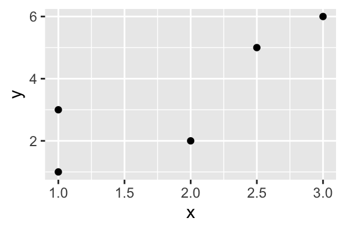
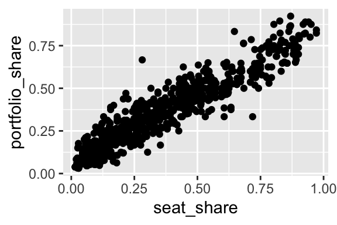
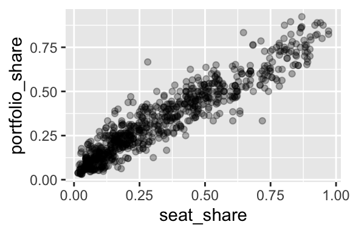
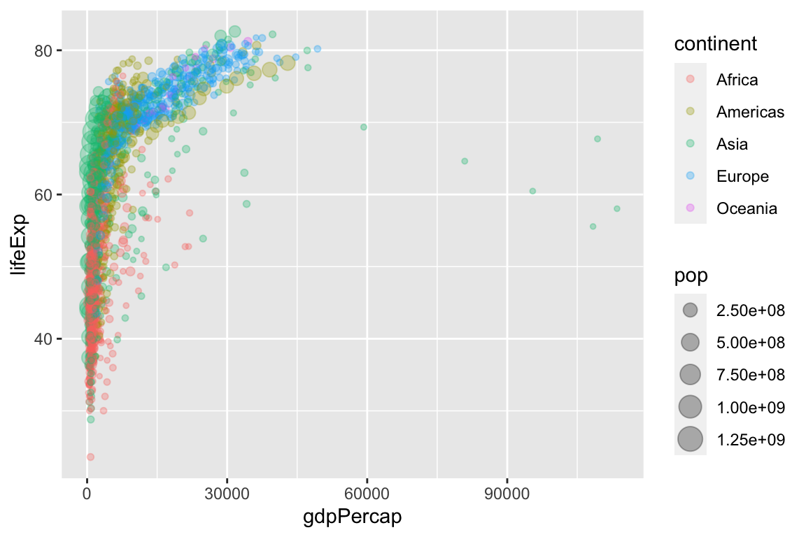
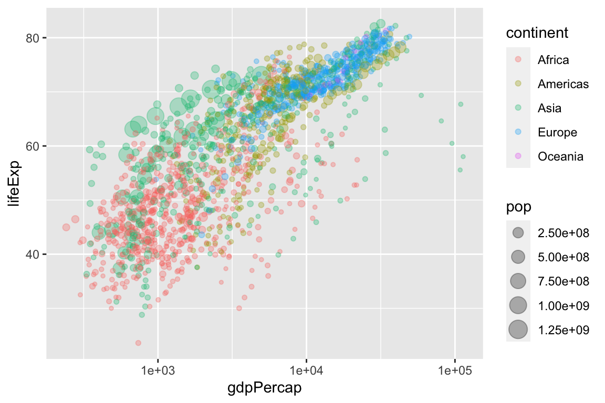

Chapter 9 The Scatterplot
The scatterplot is the most powerful tool in statistics. The following comes as close to any rote procedure that I would recommend following:
Always plot your data using a scatterplot.
For some combinations of unordered, qualitative variables with a large number of categories, the scatterplot might not offer useful information. However, the plot itself will not mislead the researcher. Therefore, the scatterplot offers a safe, likely useful starting point for almost all data analysis.
9.1 geom_point()
To create scatterplots, we simply use geom_point() as the geometry combined with our same approach to data and aesthetics.
Here’s a simple example with hypothetical data.
# create a fictional dataset with tribble()
df <- tribble(
~x, ~ y,
1, 1,
2, 2,
3, 6,
1, 3,
2.5, 5)
# quick look at this fictional data frame
glimpse(df)Observations: 5
Variables: 2
$ x <dbl> 1.0, 2.0, 3.0, 1.0, 2.5
$ y <dbl> 1, 2, 6, 3, 5
9.2 Example: Gamson’s Law
Here’s a more realistic example.
Observations: 826
Variables: 2
$ seat_share <dbl> 0.02424242, 0.46060607, 0.51515150, 0.47204968, …
$ portfolio_share <dbl> 0.09090909, 0.36363637, 0.54545456, 0.45454547, …
Because the data are so dense, especially in the lower-left corner of the plot, we might use alpha transparency to make the density easier to see.

9.3 Example: Gapminder
For a dataset with more variables, we can represent a few other variables using aesthetics other than location in space.
For this example, we use country-level data from the gapminder package. We haven’t discussed this yet, but many R packages contain datasets that are useful as examples. In this case, we can load the gapminder dataset from the gapminder package using data(gapminder, package = "gapminder"). This is an alternative to downloading the dataset to your computer, uploading it to the project in RStudio Cloud, and reading it into R with, say, read_csv().
# load gapminder dataset from gapminder package
data(gapminder, package = "gapminder")
glimpse(gapminder)Observations: 1,704
Variables: 6
$ country <fct> Afghanistan, Afghanistan, Afghanistan, Afghanistan, Af…
$ continent <fct> Asia, Asia, Asia, Asia, Asia, Asia, Asia, Asia, Asia, …
$ year <int> 1952, 1957, 1962, 1967, 1972, 1977, 1982, 1987, 1992, …
$ lifeExp <dbl> 28.801, 30.332, 31.997, 34.020, 36.088, 38.438, 39.854…
$ pop <int> 8425333, 9240934, 10267083, 11537966, 13079460, 148803…
$ gdpPercap <dbl> 779.4453, 820.8530, 853.1007, 836.1971, 739.9811, 786.…ggplot(gapminder, aes(x = gdpPercap,
y = lifeExp,
size = pop,
color = continent)) +
geom_point(alpha = 0.3)
Because GDP per capita is skewed so heavily to the right, we might transform the x-axis from a linear scale (the default) to a log (base-10) scale.
ggplot(gapminder, aes(x = gdpPercap,
y = lifeExp,
size = pop,
color = continent)) +
geom_point(alpha = 0.3) +
scale_x_log10()
percent_uninsured (the percent of each state’s population without health insurance) along the horizontal axis and the variable percent_favorable_aca (the percent of each state with a favorable attitude toward Obamacare) along the vertical axis. Interpret and speculate about any pattern. I encourage you to represent other variables with other aesthetics.
Exercise 9.2 Continuing the exercise above, label each point with the state’s two-letter abbreviation. Experiment with the following strategies.
geom_text()instead ofgeom_point()geom_label()instead ofgeom_point()geom_text_repel()in the ggrepel package in addition togeom_point()geom_label_repel()in the ggrepel package in addition togeom_point()
?geom_text()) and the contained examples to understand how to use each geom. The variable state_abbr contains the two-letter abbreviation, so you’ll need to include the aesthetic label = state_abbr in the aes() function.